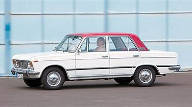

Ideą założycieli wypożyczalni Safeage w Szwajcarii (po II wojnie śwkatowej) były słowa:"Jeśli nie stać cię na samochód,wypożycz go".I chociaż historia wypożyczalni samochodów rozpoczęła się już wcześniej,warto przytoczyć ten cytat,aby pokazać jedną z najważniejszych zalet wynajmu
Wieloletnie oszczędzanie,pożyczki,kredyty... to wszystko ma miejsce i dzisiaj.Wynajem długoterminowy samochodów jest dużo korzystniejszą opcją finansowania niż zakup nowego auta,dlatego cieszy się zainteresowaniem zarówno wśród kierowców indywidualnych,jak i firm.

Rysunek 1. Fiat 125p - pierwszy wypożyczony przez nas samochód